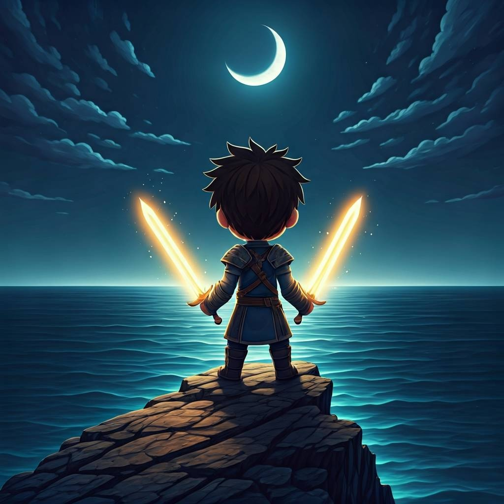
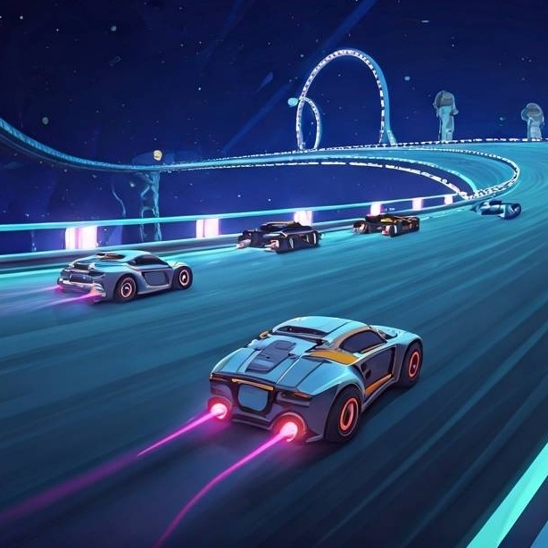
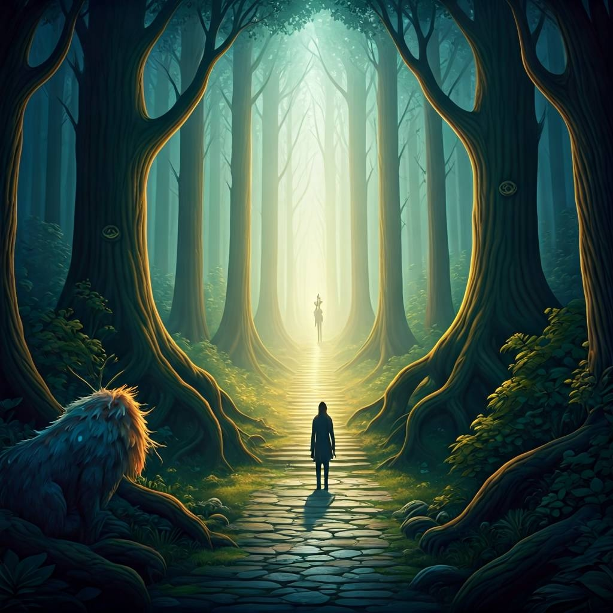

Sobre Nós
A KsRGames é um estúdio independente dedicado a criar experiências únicas e envolventes para jogadores de todas as plataformas. Nosso foco é combinar criatividade, narrativa e mecânicas inovadoras para entregar jogos que inspiram, desafiam e ficam na memória.
Com uma equipe apaixonada por desenvolvimento e cultura gamer, buscamos sempre explorar novos universos, novas ideias e novas formas de jogar. Para nós, cada jogo é uma aventura — e cada jogador, parte dela.
Nossos Jogos
Eternal Blades
Gênero: Ação / RPG
Um RPG de ação onde guerreiros manipulam lâminas ancestrais capazes de alterar o fluxo do tempo. Explore reinos esquecidos, enfrente criaturas místicas e desbloqueie novas habilidades para reconstruir o equilibrio do mundo.
Starfall Racers
Gênero: Corrida futurista
Corridas intergalácticas em alta velocidade! Personalize sua nave, domine pistas espalhadas pela galáxia e enfrente pilotos lendários em competições eletrizantes.
Forest Spirits
Gênero: Aventura / Puzzle
Uma aventura mágica em uma floresta viva repleta de espíritos antigos. Resolva puzzles ambientais, descubra segredos da natureza e recupere a harmonia entre o mundo humano e o espiritual.